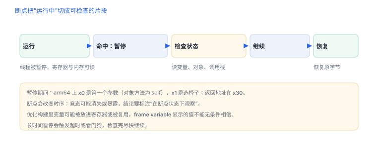

用调试器观察自有应用
断点不是“卡住程序”，而是把某个时刻的状态固定下来观察
调试器提供的是“可重复的暂停”：在指定位置停下，查看对象、参数与调用栈。会用断点的人，能用几分钟确认别人猜半天的问题。
场景 断点设好了，函数也跑到了，变量窗口却是空的。你怀疑调试器坏了，其实是那行代码被优化进了寄存器。
1. 前提条件
- 可调试的签名：开发构建带有允许调试的能力，发布构建通常没有。
- 自己的工程与设备：通过 Xcode 启动或附加到自己的进程。
- 符号可用：Debug 构建能看到变量名与行号，Release 构建常常只能看到函数名。
2. 常用命令
| 命令 | 作用 |
|---|---|
image list -o -f | 列出已加载映像、加载偏移与路径 |
br set -n "-[LoginService requestToken]" | 按 Objective-C 方法名下断点 |
br set -a 0x100004a1c | 按地址下断点（无符号时使用） |
br set -f Login.swift -l 42 | 按文件与行号下断点 |
bt all | 查看所有线程调用栈 |
po $x0 / po self | 打印对象（arm64 下第一个参数在 x0） |
frame variable | 查看当前帧的局部变量 |
memory read -c 16 $x0 | 按数量读取内存 |

3. 三种断点策略
| 场景 | 策略 | 注意 |
|---|---|---|
| 知道类与方法名 | 符号断点 | 方法被内联或改名时可能打不中 |
| 只有地址 | 地址断点 | 地址随 slide 变化，需用加载偏移换算 |
| 命中太频繁 | 条件断点 | 条件里避免调用有副作用的函数 |
一次典型的观察会话（自有工程）
(lldb) image list -o -f | head
(lldb) br set -n "-[LoginService requestToken]"
(lldb) run
(lldb) po $x0 # self
(lldb) po $x1 # _cmd
(lldb) frame variable # 查看局部变量
(lldb) bt # 调用来源
(lldb) thread step-out # 看返回值4. 看什么、不看什么
- 看调用顺序：谁先触发、谁依赖谁，比单点变量更有价值。
- 看对象图：打印对象能看到持有关系与内部状态。
- 不要迷信变量值：优化构建可能把变量放进寄存器或被复用，显示值不可靠。
- 不要长时间停在断点：会触发超时、断连或状态过期。
观察影响观察
断点改变时序，可能让竞态消失或暴露。记录“这次是在断点状态下观察到的”，并把结论标为受限。
断点改变时序，可能让竞态消失或暴露。记录“这次是在断点状态下观察到的”，并把结论标为受限。
5. 练习：三条命令查一个对象
- 在自有工程的登录流程上设两处断点，记录实际调用顺序，与源码阅读的预期比较。
- 用地址断点命中一个没有符号的第三方库函数（自己打包的版本），说明如何由加载偏移算出地址。
- 对比 Debug 与 Release 下同一处的 `frame variable` 输出，解释差异。
6. 数据细节：命令背后的动作
| 命令 | 底层动作 | 副作用 |
|---|---|---|
| 按地址下断点 | 向目标地址写入断点指令（arm64 为 4 字节） | 命中时线程暂停，原始字节被暂存 |
| 按符号下断点 | 解析符号得到当前 slide 下的地址 | 符号缺失时静默失败 |
po | 在目标进程里调用对象的描述方法 | 会改变对象状态，慎用于有副作用的方法 |
bt | 沿帧指针或调试信息回溯 | 优化构建可能缺帧 |
知道这些副作用，就不会把“po 了一下”当成纯观察——它真的执行了代码。
7. 一次真实排查记录：断点命中但变量为空
- 现象：断点停住了，想看的变量显示
nil或不可用。 - 先怀疑优化：发布构建把变量放进了寄存器，或被复用。
- 换位置：改在函数入口或返回处看寄存器与返回值，而不是看局部变量。
- 再怀疑时机：对象尚未初始化就读取，自然为空。
- 结论与限制：记录“变量被优化”，并注明结论只对当前构建配置成立。
8. 工程权衡：断点的代价
| 操作 | 对目标的影响 | 建议 |
|---|---|---|
| 条件断点 | 每次命中都要评估表达式 | 只在缩小范围后使用 |
| 一次性断点 | 命中后自动删除 | 适合只看首次调用 |
| 批量断点 | 可能拖慢到超时 | 控制在个位数 |
断点越少，越接近真实时序；观察竞态类问题时，先减少断点再用日志。
断点在指令层是什么
原始指令： 0x100003f20 add x0, x1, x2
下断点后： 0x100003f20 brk #0 ; 编码 0xD4200000
命中后： 暂停线程 → 恢复原指令 → 单步 → 再写回 brk读法：BRK #0 的机器码是 0xD4200000，占 4 字节，恰好等于一条指令的长度——所以断点可以“原地替换”，不像 hook 那样还要处理跨指令的问题。命中时调试器先恢复原指令、单步一次，再把 brk 写回，这也是断点命中次数多时明显变慢的原因。
9. 自测
- 为什么发布构建常常无法直接附加调试？
- 地址断点为什么需要结合映像加载偏移？
- 断点状态下得到的结论需要注意什么限制？